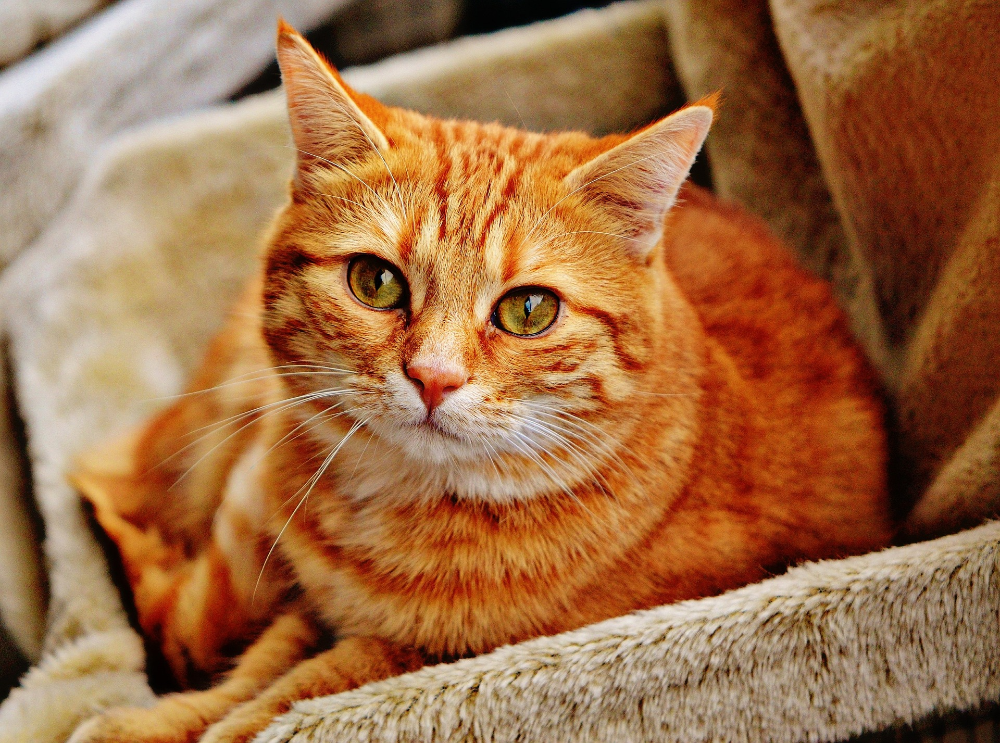

Kucing merupakan hewan peliharaan yang sangat umum di kalangan masyarakat. Selain menggemaskan, kucing juga salah satu hewan peliharaan yang cukup mandiri dan tidak terlalu sulit untuk dipelihara. Namun layaknya manusia pada umumnya, kucing juga dapat terserang beragam jenis penyakit yang dapat mengancam mereka. Salah satu cara terbaik bagi kucing peliharaan kalian agar tetap sehat dan terhindar dari beragam jenis penyakit yang dapat mengintainya adalah dengan memberikan makanan yang bernutrisi, menjaga kucing peliharaan tetap di dalam rumah dan juga mengontrol kesehatan mereka. Dari sekian beragam penyakit yang dapat menyerang kucing peliharaan kalian,kami telah merangkum dari situs Commercial Village Vet.
lima penyakit yang dapat mengintai kucing peliharaan kalian:
1. Leukemia Kucing Leukemia kucing adalah penyakit yang menyebar melalui urin, cairan hidung dan air liur. Kucing dapat tertular penyakit melalui gigitan, berbagi makanan, mangkuk air dan kotak kotoran, dan dari saling merawat. Induk kucing dapat menularkan penyakit ini kepada anak kucingnya, dan anak kucing lebih mungkin tertular penyakit ini daripada kucing dewasa. Beberapa kucing akan langsung jatuh sakit setelah tertular virus tersebut. Leukemia kucing dapat menyebabkan sejumlah kondisi, tetapi pada akhirnya akan menyerang sistem kekebalan dan menyebabkan kegagalan sumsum tulang. Penyakit apa pun bisa menjadi tanda leukemia kucing. Meskipun tidak ada obat untuk mengatasi leukemia pada kucing, penyakit ini cukup mudah dicegah. Menjaga kucing di dalam ruangan, membatasi paparan kucing lain, menjaga lingkungan hidup yang bersih dan memastikan kucing kalian divaksinasi semuanya dapat membantu mencegah leukemia kucing.
2. Feline Immunodeficiency Virus (FIV) FIV umumnya menyebar melalui luka gigitan. Kucing jalanan dan serangga territorial sangat rentan terhadap infeksi FIV. Penyebaran FIV terhadap kucing melalui mangkuk makanan dan minuman yang sama tidak secara signifikan meningkatkan risiko tertular FIV, bahkan induk kucing pun jarang menularkannya virus ini ke anak-anaknya. Setelah virus berhasil memasuki aliran darah, virus ini akan berkembang menjadi aktif. FIV menargetkan sistem kekebalan tubuh kucing. Untuk kucing yang memiliki FIV dalam tubuhnya dapat meningkatkan risiko infeksi. Upaya pencegahan FIV dapat kalian lakukan dengan menjaga kucing peliharaan kalian di dalam area rumah karena sampai saat ini belum ada vaksin yang cukup efektif untuk melawan FIV.
3. Gagal Ginjal Gagal ginjal merupakan salah satu penyebab utama kematian pada kucing yang telah menginjak usia tua. Penyebab gagal ginjal pada kucing umumnya karena faktor usia, genetika dan lingkungan seperti menelan zat beracun. Gagal ginjal pada kucing dapat terjadi dalam dua bentuk yaitu gagal ginjal akut dan gagal ginjal kronis. Gagal ginjal akut dikaitkan dengan berhentinya fungsi ginjal secara tiba-tiba, sedangkan gagal ginjal kronis terjadi akibat penurunan fungsi ginjal yang progresif. Sejumlah gejala dapat muncul sebagai akibat dari gagal ginjal, termasuk buang air kecil yang berlebihan, rasa haus yang meningkat, mual atau muntah, dehidrasi, sembelit, kehilangan nafsu makan, penurunan berat badan, halitosis (bau mulut) dan lesu. Meskipun tidak ada obat untuk gagal ginjal kucing, penyakit ini dapat dikelola melalui penyesuaian diet, pengobatan, dan terapi hidrasi kucing kalian.
4. Pankleukopenia Panleukopenia adalah penyakit virus pada kucing yang sangat menular, umumnya virus tersebut menyerang anak kucing yang lahir dari ibu yang tidak divaksinasi. Walaupun telah diberi pengobatan, anak kucing hampir selalu mati karena keganasan virus tersebut. Virus ini dapat menyebar melalui cairan tubuh, kotoran dan kutu, dan biasanya ditularkan melalui mangkuk makanan dan air yang terkontaminasi. Panleukopenia mempengaruhi saluran usus dan menyerang sistem kekebalan tubuh. Kucing yang menderita penyakit ini kemungkinan besar akan mengalami diare, muntah, dehidrasi, kekurangan gizi, anemia dan berujung pada kematian setelah beberapa hari. Panleukopenia pada kucing dapat di diagnosis melalui tes darah. Pengobatan panleukopenia pada kucing umumnya jarang berhasil. Untuk mencegah panleukemia kucing, kalian harus memvaksinasi kucing kalian agar terhindar dari pankleukopenia.
5. Rabies Rabies adalah salah satu penyakit paling berbahaya karena tidak hanya menginfeksi kucing, tetapi juga dapat menular ke manusia. Rabies dapat menginfeksi kucing melalui gigitan atau memakan hewan pengerat. Pada kucing rumahan, hewan pengerat seperti tikus merupakan salah satu faktor kucing rumahan dapat terkena rabies. Rabies dapat melemahkan dan juga menyerang sistem saraf pada kucing. Gejala rabies dapat berupa melolong, mengeluarkan air liur, demam, dan kucing berperilaku aneh. Tidak ada pengobatan yang ampuh untuk mengatasi rabies pada kucing. Satu-satunya cara untuk mencegah kucing terinfeksi rabies adalah dengan memberikan vaksin rabies dan mengurangi akritivitas kucing peliharaan kalian di luar rumah.